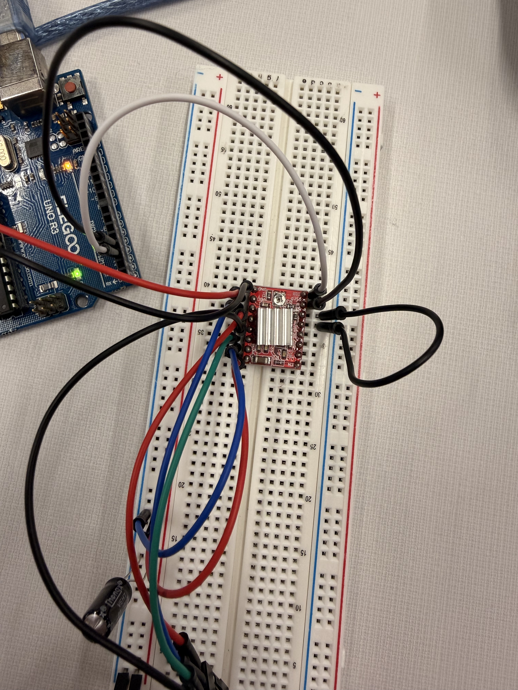
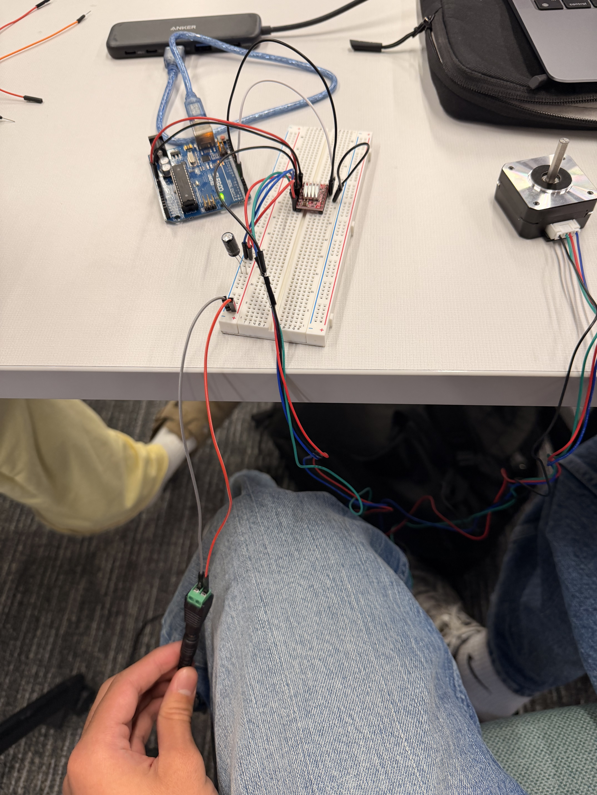
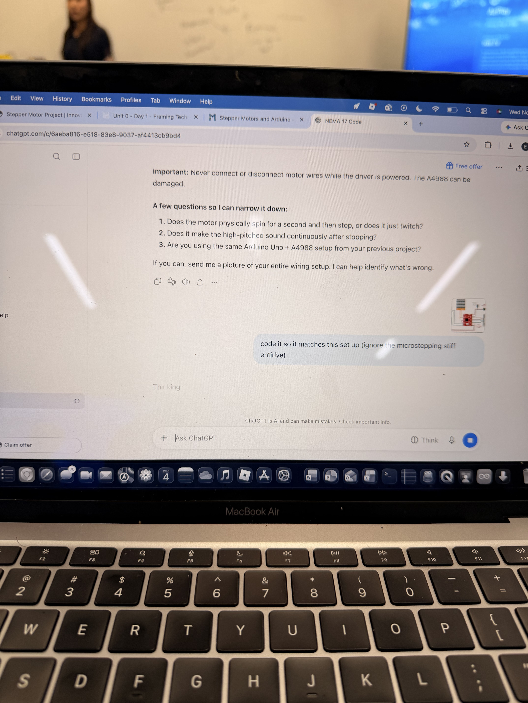
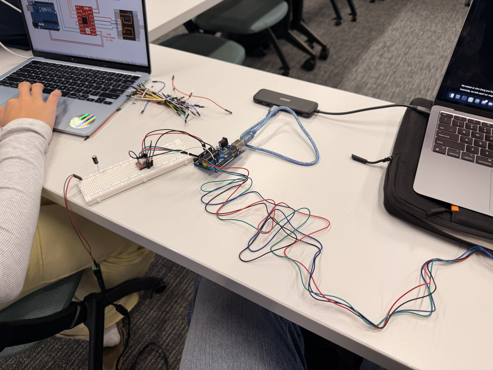
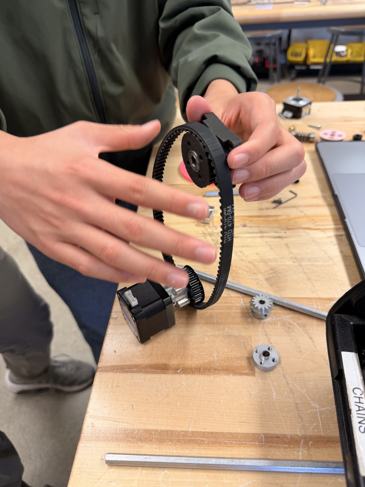
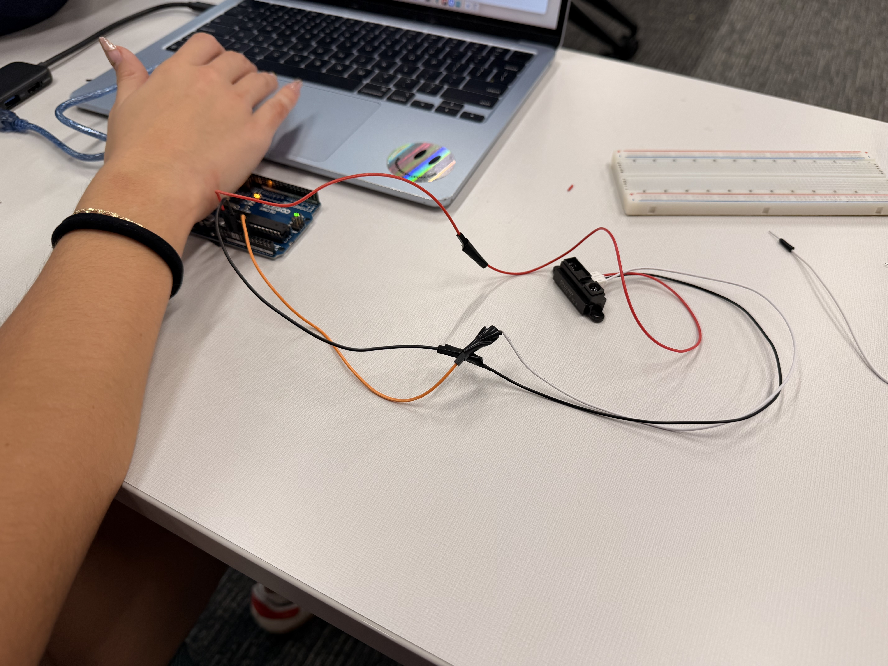
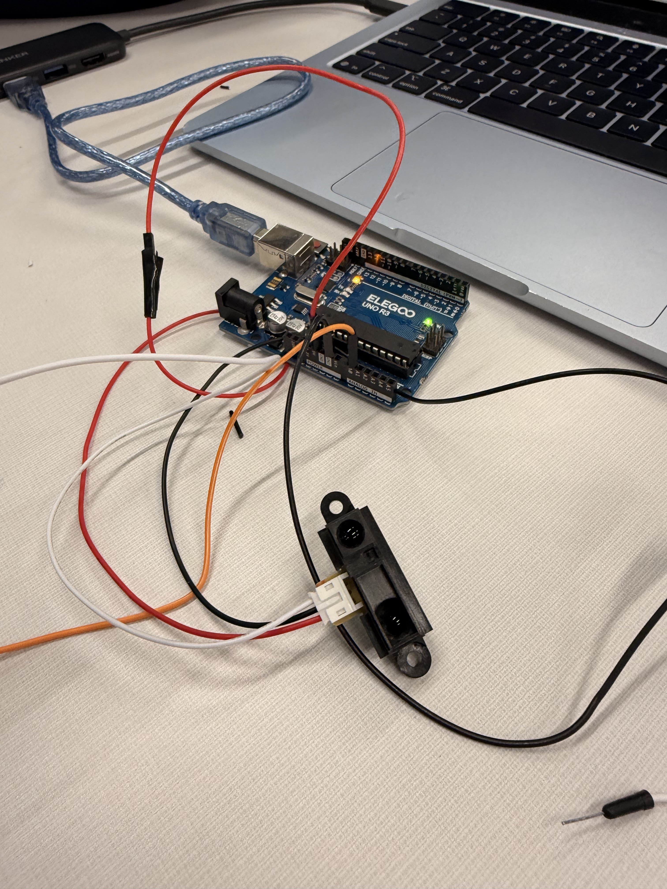
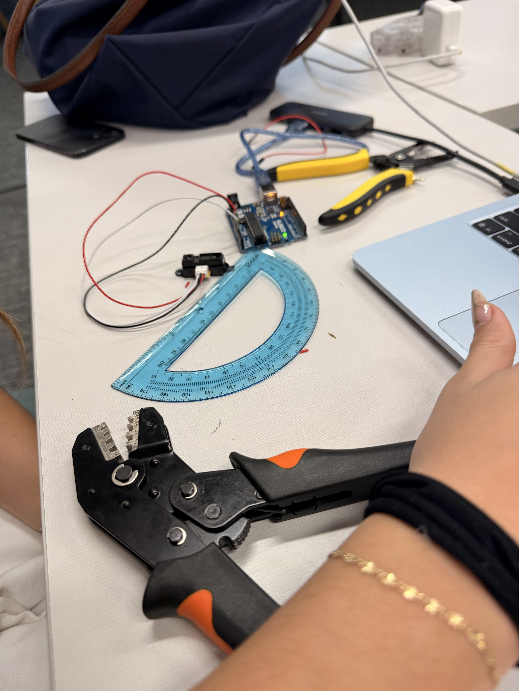

← Back to Projects
Stepper Motor and Scanner Check-In
3D Scanner Project · Progress Journal
Arduino
Stepper Motor
IR Scanner
3D Scanning
For this project, we began building the main systems for a 3D scanner.
Our progress so far includes setting up a stepper motor, wiring and
testing an infrared (IR) scanner, and planning a rotating turntable.
The overall goal is to keep the scanner in a stationary position while
rotating an object so that we can collect readings from different angles.
1. Building the Stepper Motor System
We started by assembling the stepper motor system using an Arduino,
an A4988 motor driver, a breadboard, and a NEMA 17 stepper motor.
Getting the wiring and driver settings correct took some trial and error.

01 — Initial Wiring
We began reconstructing the stepper motor setup and connecting
the motor driver. One challenge was calibrating the driver using
its potentiometer. We had difficulty adjusting it with a
screwdriver, but after some trial and error, we got it working.

02 — Arduino Connections
We continued wiring the Arduino so it could communicate with
the stepper motor driver. This step was important because the
Arduino would send the signals needed to control the motor's
movement.

03 — Motor Driver Setup
This shows our nearly completed setup, with the Arduino,
breadboard, driver, and stepper motor connected. The motor had
four differently colored wires that we had to match to the
correct connections. We switched the wires around until the
motor worked properly.

04 — Creating the Motor Code
We uploaded our wiring diagram and setup to AI and asked it
to generate code that matched our actual pin connections.
This helped us create a starting point for controlling the
stepper motor. We needed the code to match the physical wiring
so that the correct signals would reach the motor driver.

05 — Working Stepper Motor
After adjusting the wiring and code, we got the complete
stepper motor setup working. The Arduino was able to send
signals through the A4988 driver to control the motor's
rotation. This gave us a working foundation for the next
part of the project.
2. Planning the Rotating Turntable

06 — Choosing a Design
We started brainstorming how to move an object so the IR
scanner could collect readings from different angles. We
visited the robotics room and looked at John Deng's model,
which used a conveyor belt to move an object. This inspired
our first idea, but we eventually decided that a conveyor
belt would not be practical for our design. Instead, we
chose to explore a rotating table powered by our stepper
motor, allowing the object to rotate while the scanner
stays stationary.

12 — Finding a Turntable Model
We went into Studio A to look through existing models and
find one that could fit our stepper motor. This was the
beginning of figuring out how to physically connect the
motor to a turntable that could rotate an object.
3. Wiring and Testing the IR Scanner
After getting the motor working, we moved on to setting up the
infrared scanner. We followed a wiring guide and adapted the
scanner's original wires so they could connect to our Arduino.

07 — Scanner Wiring
Ava and I followed a guide to begin wiring the IR scanner.
We used the guide to understand how the scanner needed to
connect to the rest of our Arduino setup.

08 — Preparing the Wires
The scanner's original wires needed to be adapted so they
could fit into the Arduino pins. We manually stripped the
wires and joined them to additional wires. At first, we
used electrical tape to hold the connections together.

09 — Scanner Setup
This shows the completed initial wiring for the IR scanner.
With the connections in place, we could begin testing the
scanner and checking whether it was producing readings.

10 — Initial Scanner Readings
We began testing the scanner and looking at the readings
it produced. This helped us check whether the sensor was
communicating with our setup and collecting data.

11 — Testing and Calibration
We continued checking the scanner's readings and working
on calibration. Comparing the readings during testing
helped us understand how the scanner was responding and
what adjustments might be needed.

13 — Improving the Wire Connections
We realized that the electrical tape was not holding the
joined scanner wires securely enough. To improve the
connection, we switched to crimping the wires instead.
This created a stronger hold and made the wiring more
reliable.
4. Troubleshooting and Reflection
So far, one of the biggest challenges has been getting all of
the electrical connections to work correctly. The stepper
motor required us to experiment with its wiring and calibrate
the driver before it worked. We also had to adapt the IR
scanner's original wires to fit our Arduino setup.
We learned that getting a project to work is not just about
following a diagram. Small details in wiring, connections,
and calibration can make a big difference. For example,
switching from electrical tape to crimping gave us a more
secure scanner connection.
We also changed our original design idea after considering
how practical it would be. Instead of using a conveyor belt,
we decided to investigate a rotating turntable powered by
our stepper motor. This should allow us to scan an object
from different angles without moving the scanner itself.
We still need to develop the turntable and figure out how
to combine the scanner and motor into one working system.
Our next goal is to find or create a model that fits the
motor and allows the object to rotate smoothly.